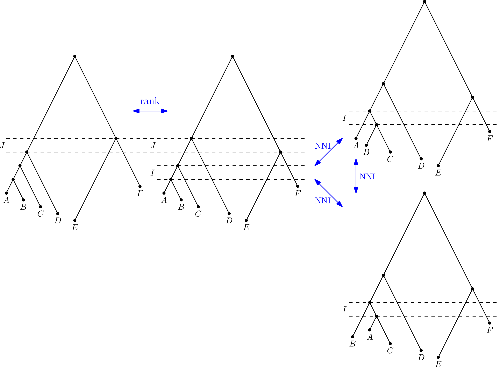

Scalable algorithms
for biomolecular data
Alex Gavryushkin
CS in Biology

Supported by NSW Biosciences Fund

Model-based approaches to genotype-phenotype data
 $
f(x_1,\, \ldots,\, x_p) = \beta_0 + \sum_{i} x_i \beta_i
+ \sum_{i \le j} x_i x_j \beta_{i,j}
$
$
+ \sum_{i \le j \le k} x_i x_j x_k \beta_{i,j,k}
+ \ldots
$
$
f(x_1,\, \ldots,\, x_p) = \beta_0 + \sum_{i} x_i \beta_i
+ \sum_{i \le j} x_i x_j \beta_{i,j}
$
$
+ \sum_{i \le j \le k} x_i x_j x_k \beta_{i,j,k}
+ \ldots
$The linear model
$ f(x_1,\, \ldots,\, x_p) = \beta_0 + \sum_{i} x_i \beta_i $
Genome-Wide Association Studies

Sarah Howles et al. Genetic variants of calcium and vitamin D metabolism in kidney stone disease. 2019
The set of genotypes is $\mathcal G = \{0,1\}^{p}$.
A fitness landscape is a function $f:\mathcal G \to \mathbb R^+$.
For $g \in \mathcal G$, $f(g)$ is called the fitness of genotype $g$.
The epistasis model
$ f(x_1,\, \ldots,\, x_p) = \beta_0 + \sum_{i} x_i \beta_i + \sum_{i \le j} x_i x_j \beta_{i,j} $ Epistasis is the deviation from the additive expectation of allelic effects:
$$e = f(00) + f(11) - \Big(f(01) + f(10)\Big)$$
Epistasis is the deviation from the additive expectation of allelic effects:
$$e = f(00) + f(11) - \Big(f(01) + f(10)\Big)$$

State of the art in 2018
 Kieran Elmes et al. Learning epistatic gene interactions from perturbation screens. 2021
Kieran Elmes et al. Learning epistatic gene interactions from perturbation screens. 2021
Problem #1: The hierarchy assumptions
Sarah Howles et al. Genetic variants of calcium and vitamin D metabolism in kidney stone disease. 2019
Problem #2: Scalability

Kieran Elmes et al. Learning epistatic gene interactions from perturbation screens. 2021

Kieran Elmes et al. A fast lasso-based method for inferring higher-order interactions. 2022
Problem #3:
Model assumptions
$ f(x_1,\, \ldots,\, x_p) = \beta_0 + \sum_{i} x_i \beta_i + \sum_{i \le j} x_i x_j \beta_{i,j} $ $ + \sum_{i \le j \le k} x_i x_j x_k \beta_{i,j,k} + \ldots $Kieran Elmes et al. A fast lasso-based method for inferring higher-order interactions. 2022
Why don't you just use AI?

What AI?
SNVformer

Kieran Elmes et al. SNVformer: an attention-based deep neural network for GWAS data. 2022

Validation through simulations
- Just simulating from the epistasis (or higher-order interaction) model doesn't work—a liner approximation is typically good enough
- Can we simulate from a model for which a linear approximation fails?
- Can this model be also relevant?
"eQTL" simulations summary
$$ g \iff \beta_0 + \beta_1 v_1 + \dots + \beta_k v_k > 0 $$
"eQTL" simulations results

Spot the AI one!
Transformer performance
Transformer's time complexity
Kolmogorov-Arnold Networks

Kolmogorov-Arnold Networks

KAN is better than the transformer? (unpublished work)

Lilin Zhang, Kieran Collienne, and Alex Gavryushkin (2024).
Precision oncology


Alves, Joao, Sonia Prado-Lopez, Jose Manuel Cameselle-Teijeiro, David Posada. "Rapid evolution and biogeographic spread in a colorectal cancer" bioRxiv (2019).
Timing tumour evolution

Lote, H., I. Spiteri, L. Ermini, A. Vatsiou, A. Roy, A. McDonald, N. Maka, et al. 2017. "Carbon Dating Cancer: Defining the Chronology of Metastatic Progression in Colorectal Cancer." Annals of Oncology 28 (6): 1243–49.
Phylogenetic trees on tumor cells

The big challenge: scalable algorithms for reconstructing evolutionary histories from sequence data
NNI graph

Theorem (phylogenetic classic)
Computing the NNI distance is NP-hard.Discrete time-tree space
Theorem (Collienne, G)
There exists an efficient (polynomial) algorithm for computing the RNNI distance.
Geodesic in time-tree space
- Gavryushkin, Alex, and Alexei J. Drummond. "The space of ultrametric phylogenetic trees." Journal of Theoretical Biology 403 (2016): 197-208.
- Gavryushkin, Alex, and Alexei Drummond. tauGeodesic. Mar. 2015. doi: 10.5281/zenodo.47152. https://github.com/gavruskin/tauGeodesic

- Gavryushkina, Alexandra, Tracy A. Heath, Daniel T. Ksepka, Tanja Stadler, David Welch, and Alexei J. Drummond. "Bayesian total-evidence dating reveals the recent crown radiation of penguins." Systematic Biology 66.1 (2016): 57-73.
- Gavryushkin, Alex, and Alexei Drummond. tauGeodesic. Mar. 2015. doi: 10.5281/zenodo.47152. https://github.com/gavruskin/tauGeodesic